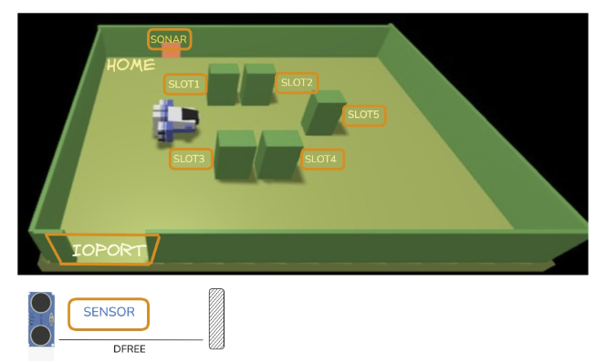

Goal Sprint2:
Progettare e realizzare l'attore cargorobot e integrarlo con l'ambiente virtuale RobotSmart26 per eseguire la missione autonoma di trasferimento container (IOPort -> slot 5 -> slot assegnato -> HOME). Modellare il componente marker per la sincronizzazione del processo di marcatura nello slot 5.
A Maritime Cargo shipping company (from now on, simply company) intends to automate the operations of load of containers in the ship’s cargo hold (or simply hold). To this end, the company plans to employ a Differential Drive Robot (from now, called cargorobot).
The hold is a rectangular, flat area with an Input/Output port (IOPort). The area provides 4 slots to store the
containers and a slot named slot5.

In the picture above:
D < DFREE/2, during a reasonable time (e.g. 3 secs).
The company asks us to build service named cargoservice that should work as follows.
The cargoservice is able to receive a request to load a container sent by some customer by using the pushbutton of the IOPort.
retrylater, if the IOPort is currently occupied by a container or if the system is Out of service
slots1-4 are already occupied.
When the request to load is accepted, the customer must move the container in the sensor area within prefixed amount of time (e.g. 30 secs), otherwise the systems becomes disengaged. Then, the cargoservice uses the cargorobot to move the container from the IOPort to the slot5 (for marking the container) and then to the reserved slot.
The service must also show on the display on the IOPort:
D > DFREE for at least 3 secs (perhaps a
failure of the sonar).
L'analisi dei requisiti è stata svolta nello Sprint0.
Come evidenziato nell'analisi dei requisiti dello Sprint 0, RobotSmart26 è il servizio esterno individuato per governare il robot a guida differenziale (DDR), in quanto riduce l'abstraction gap calcolando autonomamente il path-planning a partire da coordinate cartesiane. Tuttavia, RobotSmart26 è un componente infrastrutturale agnostico rispetto al dominio applicativo: non conosce i concetti di stiva, container, slot riservato, marcatura barcode o fasi di carico.
Analizzando le interfacce esposte da RobotSmart26:
Il componente software RobotSmart26 non espone una singola modalità di pilotaggio, bensì diversi livelli di astrazione per il controllo della navigazione del DDR. Nell'ottica di ridurre l'abstraction gap senza introdurre complessità non richieste dal committente, è necessario analizzare comparativamente ciascuna alternativa:
Il testo del problema descrive il marker come un dispositivo situato nello slot 5 per l'etichettatura barcode temporanea. Nell'analisi del problema emergono due opzioni:
Se RobotSmart26 risponde con moverobotfailed(PLANDONE, PLANTODO) (es. percorso ostruito o guasto simulato), cargorobot interrompe la missione, entra in uno stato di sicurezza (halted) e notifica cargoservice tramite il dispatch transportFailed. La decisione su come gestire il sistema (annullamento della prenotazione o stato di allarme) rimane in capo all'orchestratore.
Nel nostro Sprint 1 gli attori cargoservice e ioport condividevano lo stesso contesto ctxcargoservice su porta 8120. Nello Sprint 2:
Dall'analisi precedente segue il protocollo dei messaggi del modello qak (sprint2.qak ).
System sprint2
// --- Comunicazione IOPort <-> CargoService (dallo Sprint 1) ---
Request loadrequest : loadrequest(IOPORT_STATE)
Reply retrylater : retrylater(CAUSE, HOLD_STATE) for loadrequest
Reply reject : reject(HOLD_STATE) for loadrequest
Reply engaged : engaged(RESERVED_SLOT, HOLD_STATE) for loadrequest
Dispatch updateHoldDisplay : updateHoldDisplay(STATE, HOLD_STATE, MSG)
Dispatch updateWorkingState: updateWorkingState(STATE)
Dispatch button_pushed : button_pushed(X)
Dispatch containerSensed : containerSensed(X)
// --- Comunicazione CargoService <-> CargoRobot ---
Request transportContainer : transportContainer(SLOT, TARGETX, TARGETY)
Reply transportDone : transportDone(SLOT) for transportContainer
Reply transportFailed : transportFailed(CAUSE) for transportContainer
// --- Interfaccia nativa verso RobotSmart26 ---
Request moverobot : moverobot(TARGETX, TARGETY, STEPTIME)
Reply moverobotdone : moverobotok(ARG) for moverobot
Reply moverobotfailed : moverobotfailed(PLANDONE, PLANTODO) for moverobot
// --- Contesti di Esecuzione ---
Context ctxcargoservice ip [host="localhost" port=8120]
Context ctxrobotsmart ip [host="127.0.0.1" port=8020]
ExternalQActor robotsmart context ctxrobotsmart
I casi di test mirano a validare l'orchestrazione della missione di trasporto e l'integrazione con il servizio esterno: ***TABELLA***
L'attore implementa la seguente sequenza:
QActor cargorobot context ctxcargoservice {
[#
var TargetSlot = -1
var TargetX = -1
var TargetY = -1
val StepTime = 345
#]
withobj hold using "cargoservice.Hold()"
State idle initial {
println("$name | pronto in IDLE") color blue
}
Transition t0 whenRequest transportContainer -> moveToIOPort
State moveToIOPort {
onMsg(transportContainer : transportContainer(SLOT, TARGETX, TARGETY)) {
[#
TargetSlot = payloadArg(0).toInt()
TargetX = payloadArg(1).toInt()
TargetY = payloadArg(2).toInt()
val posIOPort = hold.getIOPortPosition()
#]
println("$name | Inizio trasporto per slot $TargetSlot verso IOPort") color blue
request robotsmart -m moverobot : moverobot($posIOPort.x, $posIOPort.y, $StepTime)
}
}
Transition t1 whenReply moverobotdone -> atIOPort
whenReply moverobotfailed -> handleMoveFailed
State atIOPort {
println("$name | Arrivato a IOPort, prelievo container") color blue
}
Transition t2 whenTime 1500 -> moveToSlot5
State moveToSlot5 {
[# val posS5 = hold.getSlot5Position() #]
println("$name | Trasferimento a Slot 5 per marcatura barcode") color blue
request robotsmart -m moverobot : moverobot($posS5.x, $posS5.y, $StepTime)
}
Transition t3 whenReply moverobotdone -> atSlot5
whenReply moverobotfailed -> handleMoveFailed
State atSlot5 {
println("$name | Arrivato a Slot 5: marcatura in corso...") color blue
}
Transition t4 whenTime 3000 -> moveToTargetSlot
State moveToTargetSlot {
println("$name | Marcatura ultimata. Verso lo slot riservato ($TargetX, $TargetY)") color blue
request robotsmart -m moverobot : moverobot($TargetX, $TargetY, $StepTime)
}
Transition t5 whenReply moverobotdone -> atTargetSlot
whenReply moverobotfailed -> handleMoveFailed
State atTargetSlot {
println("$name | Container depositato nello slot $TargetSlot") color blue
}
Transition t6 whenTime 1500 -> returnToHome
State returnToHome {
[# val posHome = hold.getHomePosition() #]
println("$name | Rientro verso HOME ($posHome.x, $posHome.y)") color blue
request robotsmart -m moverobot : moverobot($posHome.x, $posHome.y, $StepTime)
}
Transition t7 whenReply moverobotdone -> transportCompleted
whenReply moverobotfailed -> handleMoveFailed
State transportCompleted {
println("$name | Missione conclusa con successo in HOME") color blue
replyTo transportContainer with transportDone : transportDone($TargetSlot)
[# TargetSlot = -1 #]
}
Goto idle
State handleMoveFailed {
println("$name | ERRORE DI NAVIGAZIONE da RobotSmart26!") color red
replyTo transportContainer with transportFailed : transportFailed(robot_stuck)
[# TargetSlot = -1 #]
}
Goto idle
}
cargoservice delega il movimento a cargorobot dopo l'accettazione e il rilevamento del container:
State handleContainer {
println("$name | Container rilevato nell'area sensore. Avvio carico.") color magenta
[#
val targetX = h.getSlotX(CurrentReservedSlot)
val targetY = h.getSlotY(CurrentReservedSlot)
#]
request cargorobot -m transportContainer : transportContainer($CurrentReservedSlot, $targetX, $targetY)
}
Transition tTrans whenReply transportDone -> handleTransportSuccess
whenReply transportFailed -> handleTransportFailure
State handleTransportSuccess {
onMsg(transportDone : transportDone(SLOT)) {
[#
val finishedSlot = payloadArg(0).toInt()
h.setSlotOccupied(finishedSlot)
CurrentReservedSlot = -1
var CurrentHoldState = h.getHoldStateString()
var StateStr = "'IDLE'"
var MsgStr = "'Carico completato con successo'"
#]
println("$name | Carico completato nello slot $finishedSlot") color magenta
forward ioport -m updateHoldDisplay : updateHoldDisplay($StateStr, $CurrentHoldState, $MsgStr)
}
}
Goto idle
State handleTransportFailure {
println("$name | Allarme: fallimento durante la movimentazione!") color red
[#
if (CurrentReservedSlot != -1) {
h.releaseSlot(CurrentReservedSlot)
CurrentReservedSlot = -1
}
#]
Goto idle
}
Nel corso dello Sprint 1, la classe Hold si limitava a tenere traccia della disponibilità numerica e dello stato astratto degli alloggiamenti (FREE, RESERVED, OCCUPIED) per abilitare le risposte di accettazione o rifiuto delle richieste. Con l'introduzione della movimentazione autonoma del DDR nello Sprint 2, la stiva deve arricchirsi di una rappresentazione spaziale conforme al sistema di riferimento a coordinate cartesiane richiesto da RobotSmart26.
Separazione tra Topologia Immutabile e Stato Dinamico
La gestione delle informazioni all'interno della stiva presenta due componenti con requisiti di mutabilità opposti:
package utils.cargoservice;
import java.util.HashMap;
import java.util.Map;
public class Hold {
public static final int MAX_SLOTS = 4;
// Struttura ausiliaria per coordinate cartesiane
public record Position(int x, int y) {}
// Stato di ciascun slot
public enum SlotStatus { FREE, RESERVED, OCCUPIED }
// Mappa topologica immutabile delle posizioni fisse sulla griglia
private final Position homePos = new Position(0, 0);
private final Position ioPortPos = new Position(0, 4);
private final Position slot5Pos = new Position(4, 2);
private final Map slotCoordinates = new HashMap<>();
private final Map slotStates = new HashMap<>();
public Hold() {
// Inizializzazione coordinate cartesiane dei 4 slot della stiva
slotCoordinates.put(1, new Position(1, 1));
slotCoordinates.put(2, new Position(3, 1));
slotCoordinates.put(3, new Position(1, 3));
slotCoordinates.put(4, new Position(3, 3));
// Inizializzazione degli stati a FREE
for (int i = 1; i <= MAX_SLOTS; i++) {
slotStates.put(i, SlotStatus.FREE);
}
}
// --- Metodi di accesso alle posizioni fisse (Read-Only) ---
public Position getHomePosition() { return homePos; }
public Position getIOPortPosition() { return ioPortPos; }
public Position getSlot5Position() { return slot5Pos; }
public int getSlotX(int slotId) {
Position pos = slotCoordinates.get(slotId);
return pos != null ? pos.x() : -1;
}
public int getSlotY(int slotId) {
Position pos = slotCoordinates.get(slotId);
return pos != null ? pos.y() : -1;
}
// --- Metodi di manipolazione di stato (usati da cargoservice) ---
public synchronized boolean isFull() {
return slotStates.values().stream().noneMatch(s -> s == SlotStatus.FREE);
}
public synchronized int reserveFirstFree() {
for (int i = 1; i <= MAX_SLOTS; i++) {
if (slotStates.get(i) == SlotStatus.FREE) {
slotStates.put(i, SlotStatus.RESERVED);
return i;
}
}
return -1; // Stiva piena
}
public synchronized void releaseSlot(int slotId) {
if (slotStates.containsKey(slotId) && slotStates.get(slotId) == SlotStatus.RESERVED) {
slotStates.put(slotId, SlotStatus.FREE);
}
}
public synchronized void setSlotOccupied(int slotId) {
if (slotStates.containsKey(slotId)) {
slotStates.put(slotId, SlotStatus.OCCUPIED);
}
}
public synchronized String displayStatus() {
StringBuilder sb = new StringBuilder();
for (int i = 1; i <= MAX_SLOTS; i++) {
if (i > 1) sb.append(",");
sb.append(i).append(":").append(slotStates.get(i));
}
return sb.toString();
}
}
Il deployment dello Sprint 2 richiede l'esecuzione concorrente del simulatore del robot e dell'applicazione QAk ***TABELLA senza ultima riga***
Requisiti Selezionati per lo Sprint 3:
Progettare e realizzare il sottosistema telemetrico sonar e l'attuatore led, integrando il firmware su microcontrollore o nodo dedicato. Completare la gestione delle anomalie telemetriche con transizione nello stato Out of service a display e gestire la segnalazione luminosa nelle diverse fasi operative.